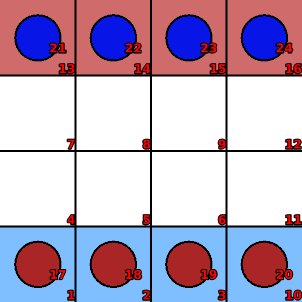
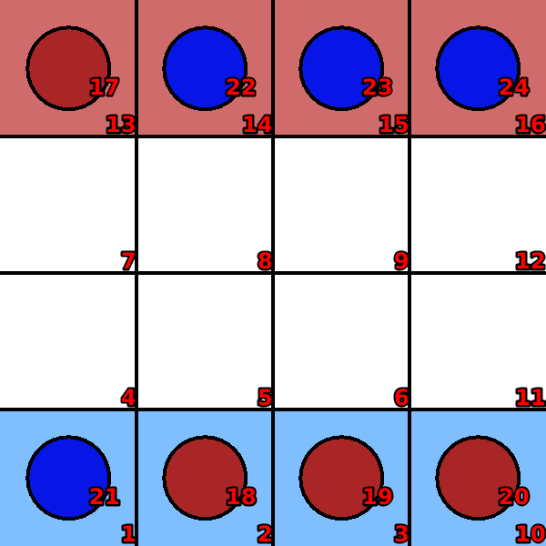
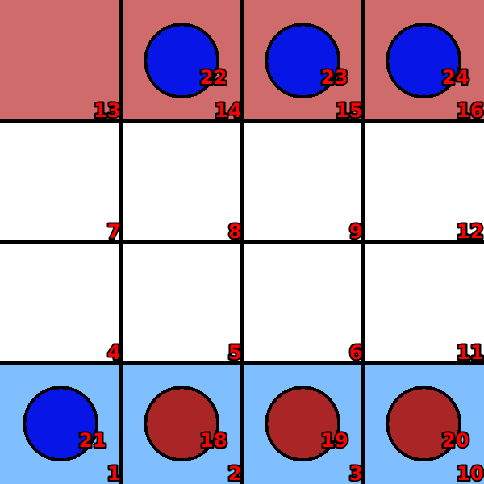

Breakthrough
Language: Teaching Script Entire Dialog
World states:
init-breakthrough.world
second-breakthrough.world
final-breakthrough.world
fail-breakthrough.world
Primitive concepts used
Object types:
|
locations, blocks |
Colors:
|
red, blue
|
| Spatial relations: |
on, below, between |
| Functions: |
count of, less than |
Teaching Dialog (Rosie in bold)
TEACHER: The name of the game is break-through.
Please setup the game.
TEACHER: Load init-breakthrough.

Ok.
TEACHER: Ok.
Please describe the actions, goals, and failure conditions.
TEACHER: If a red block is under a clear location then you can move the block onto the location.
Please describe the meaning of 'clear' in this context.
TEACHER: If a location is not below an object then it is clear.
Ok, I've learned the meaning of 'clear' for this context.
I've learned the action.
TEACHER: Load second-breakthrough.
Ok.
TEACHER: If an occupied location is attackable by a red block then you can remove a block on the occupied location and move the red block onto the occupied location.
Please describe the meaning of 'occupied' in this context.
TEACHER: If a location is below a blue block then it is occupied.
Ok, I've learned the meaning of 'occupied' for this context.
Please describe the meaning of 'attackable-by' in this context.
TEACHER: If a location is under an object and the location is diagonal with the object then the object is attackable by the location.
Ok, I've learned the meaning of 'attackable-by' for this context.
I've learned the action.
TEACHER: Load final-breakthrough.

Ok.
TEACHER: The goal is that a red location is below a red block.
Please setup the goal state.
TEACHER: Ok.
I've learned the goal.
TEACHER: Load fail-breakthrough.

Ok.
TEACHER: If a blue location is occupied then you lose.
Please setup the failure condition.
TEACHER: Ok.
I've learned the failure condition.
TEACHER: Done.
I've learned break-through. Shall we play a game?
TEACHER: No.
Ok.